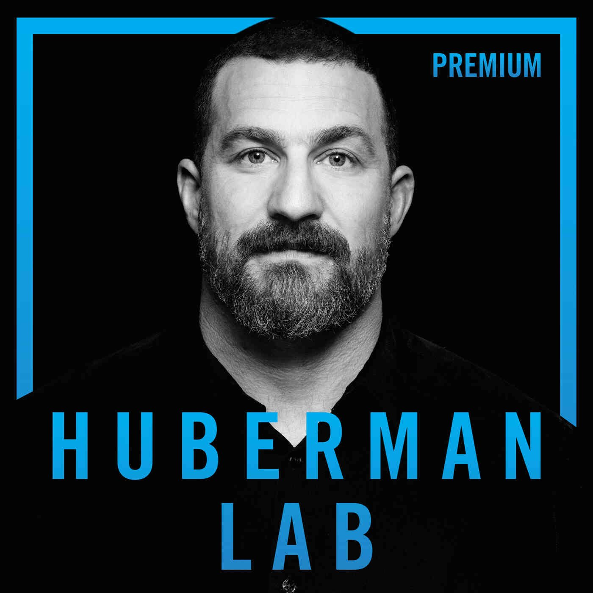

Protocolo NSDR
En esta meditación de 10 minutos, el neurocientífico de Stanford Andrew Huberman lo guía a través de un protocolo de descanso profundo sin dormir (NSDR) para mejorar el proceso de aprendizaje al reducir la fatiga diurna y mejorar la concentración, ademas de mejorar enormemente su sueño, estado de ánimo y promover la Neuroplasticidad.
VER VIDEO

Oct 1, 2023 | Video